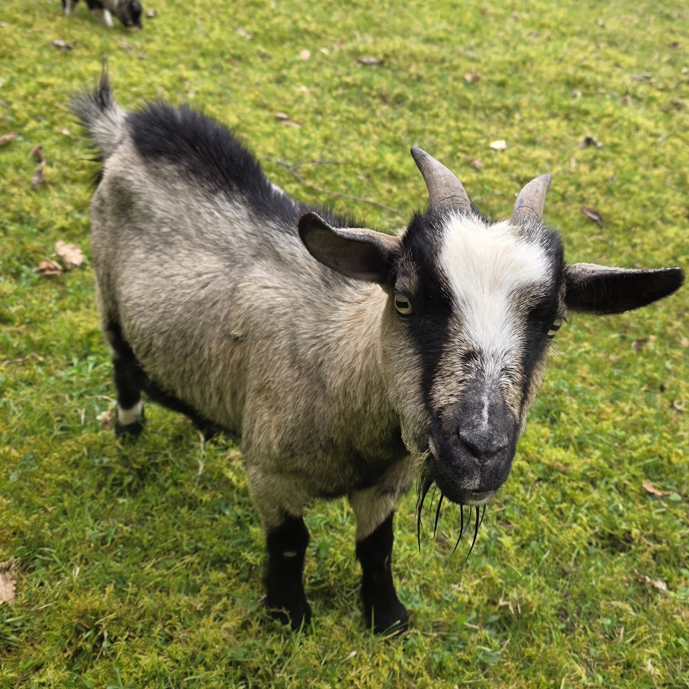
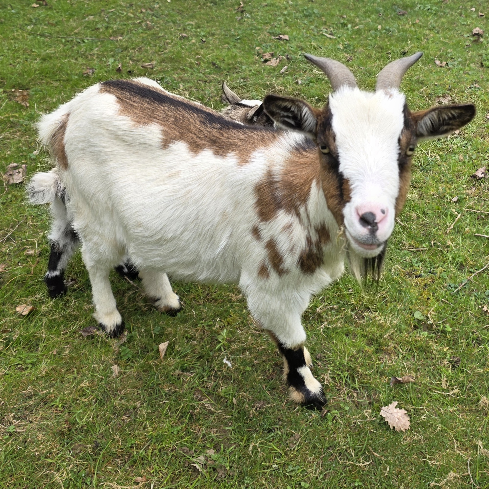
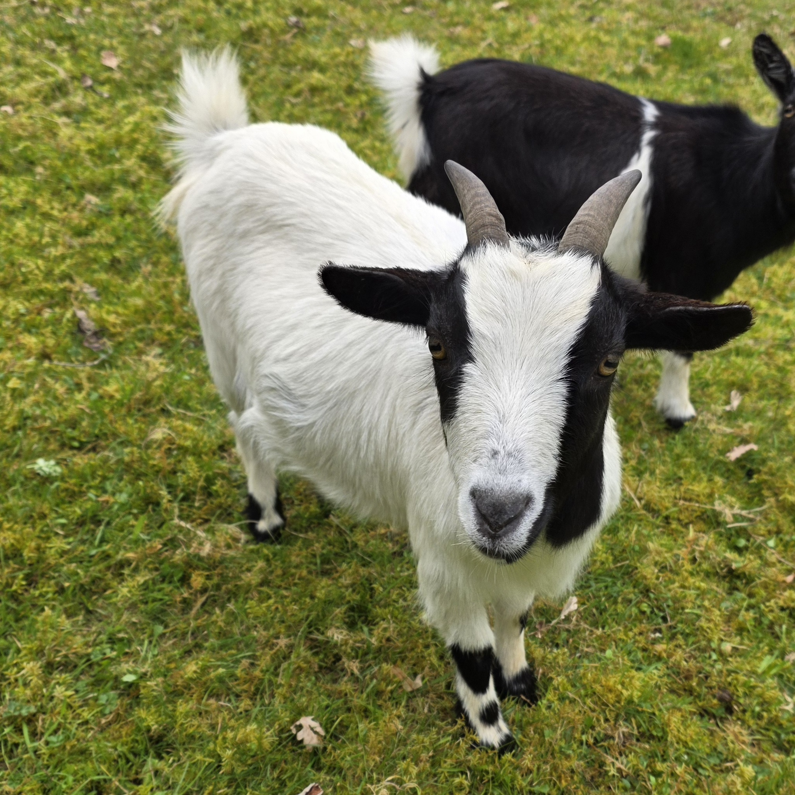
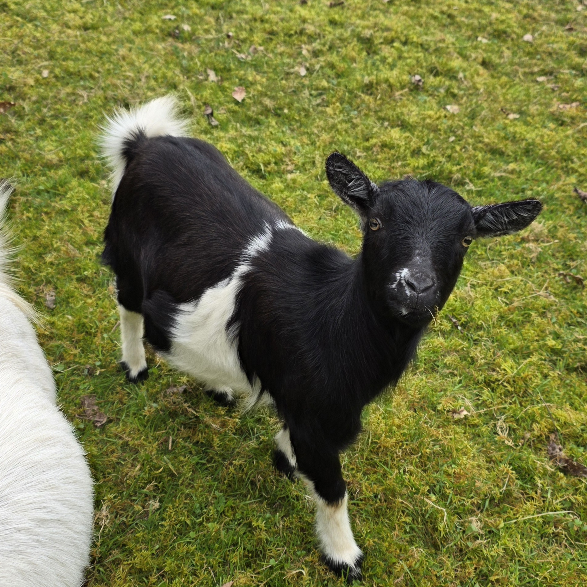
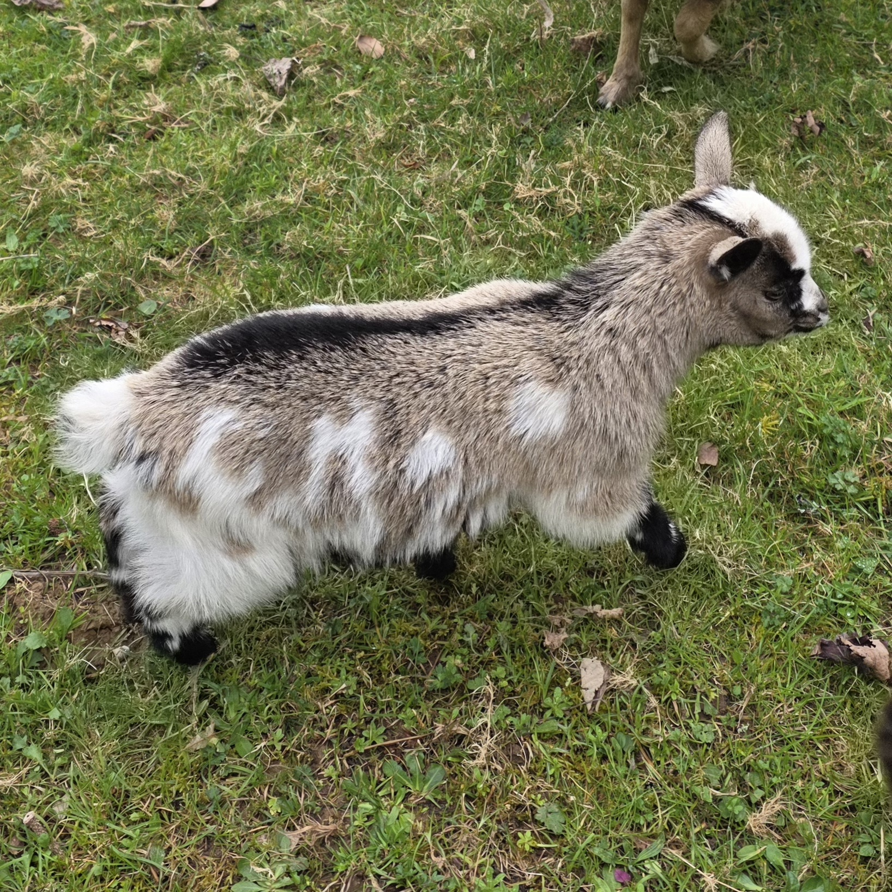

Présentation générale
Les chèvres naines sont des animaux curieux, sociables et très attachants. Elles vivent en groupe et possèdent chacune leur caractère. Dans la mini-ferme de Nicolas, elles disposent de grands espaces pour pâturer et d'un abri pour se protéger des intempéries.
Informations clés
Race : Chèvre naine miniature
Nombre d’individus : 7
Alimentation : foin, herbe, végétaux
Eau fraîche disponible en permanence
Le mâle
Les femelles
Rhino

Aspro

Oréo

Bounty

Les bébés de 2026
Nutz
